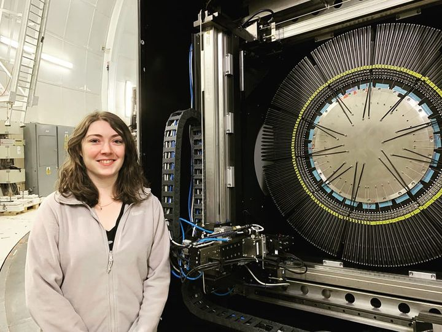

About Me
I'm a postdoctoral researcher at the MIT Kavli Institute, working to support research and observations with the Magellan telescope. My background is in ground-based instrumentation, specifically working with multi-object spectrographs.
I previously worked with the Cambridge Astronomical Survey Unit (CASU) at the University of Cambridge in a data science capacity, specialising in pipeline development for ground-based instrumentation. I have significant experience in Python alongside SQL, Git, and JIRA, having used these languages and tools in Agile development environments.
I successfully defended my DPhil thesis in June 2023, which was supervised by Prof. Gavin Dalton. My thesis is on the metrology, calibration, and commissioning of the new pick-and-place multi-object spectrograph called WEAVE. WEAVE will be installed on the 4.2 m William Herschel Telescope and the first light was achieved in October 2022.
In June 2019, I graduated with an MSci in Astrophysics from Royal Holloway, University of London (First Class Honours). I have previous experience as an Outreach Ambassador and enjoy mentoring students as they complete their academic journey.